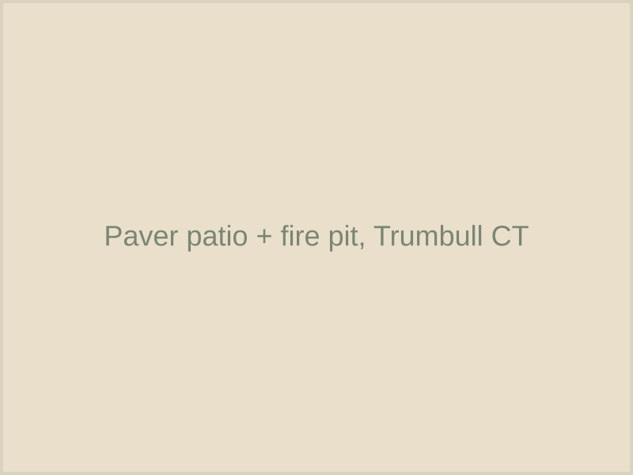
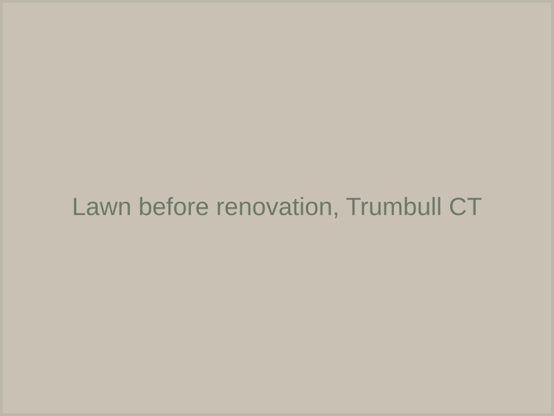
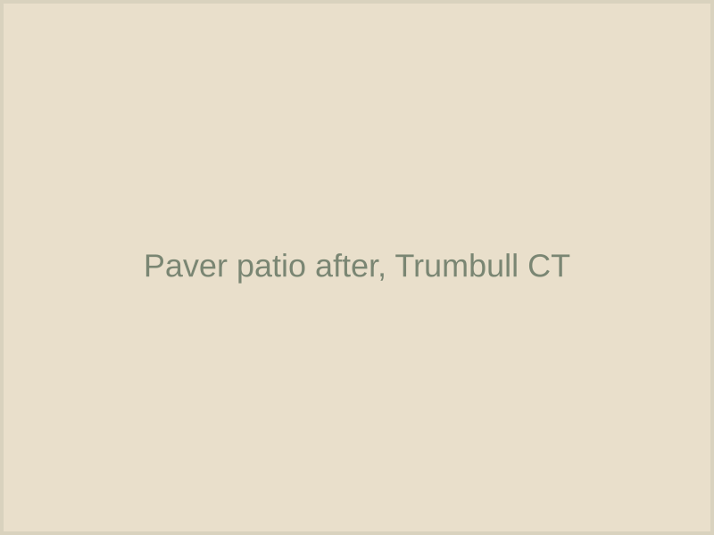
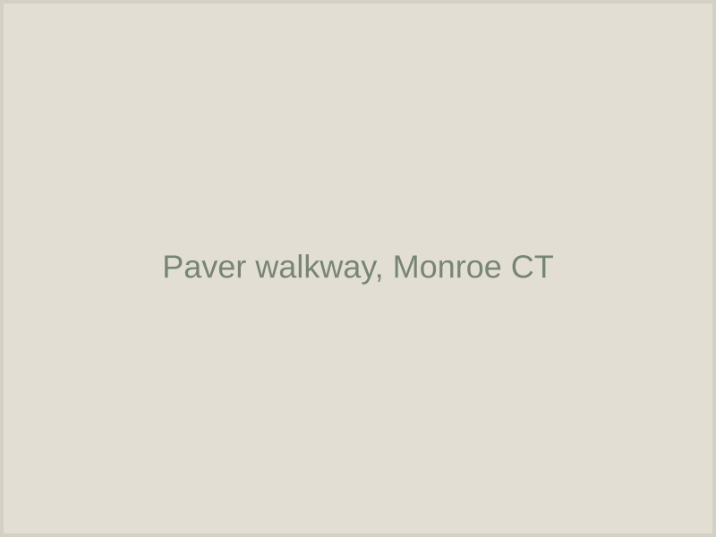
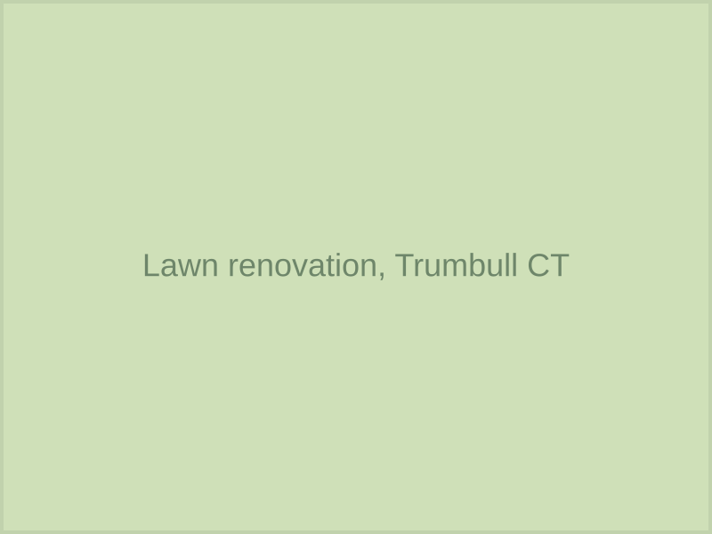
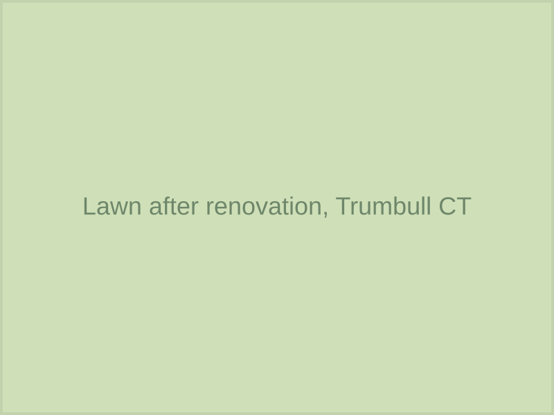
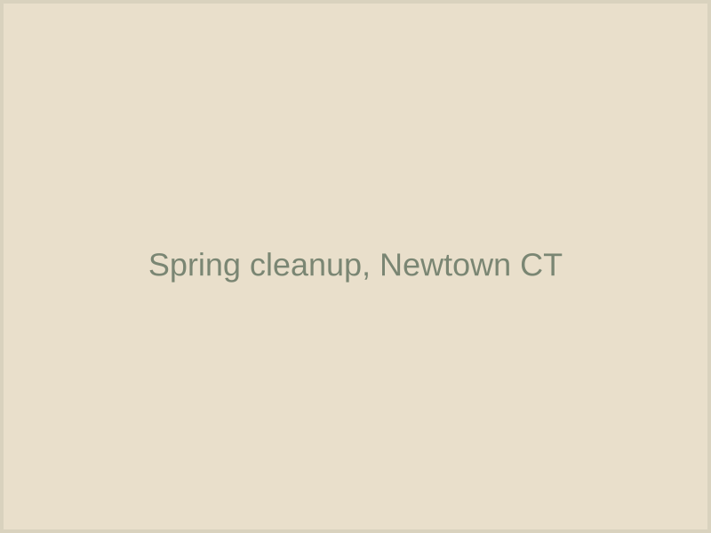
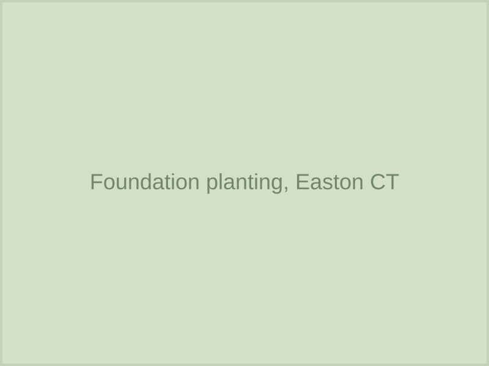

Past Work
A sample of recent projects around Trumbull and Fairfield County. Tap any project for details, or filter by service type.
Project gallery
-

Paver Patio & Fire Pit Trumbull, CT Project details


Before AfterA tired concrete slab replaced with a 480 sq ft paver patio and a gas fire pit surround. Completed in three days including base prep.
-
Fieldstone Retaining Wall Shelton, CT Project details
A 60-foot fieldstone wall with proper drainage backfill, built to stop soil erosion along a steep side yard.
-

Perennial Garden Bed Trumbull, CT Project details
Full-sun perennial bed with hydrangea, coneflower, and ornamental grasses, designed for low-maintenance color from June through September.
-

Front Entry Walkway Monroe, CT Project details
Replaced a cracked concrete path with a curved paver walkway and matching landing at the front door.
-

Full Lawn Renovation Trumbull, CT Project details

Before AfterOld, patchy lawn stripped, regraded, and replaced with new sod. Overseeded the following fall to fill in thin spots.
-

Mulch & Bed Refresh Monroe, CT Project details
Cleared winter debris, re-edged the beds, and installed double-shredded hardwood mulch around the foundation.
- Request a Free Estimate
-

Spring Cleanup Newtown, CT Project details
Full spring cleanup: leaf and debris removal, bed edging, and first mow of the season.
-

Foundation Planting Easton, CT Project details
Boxwood and hydrangea foundation planting to replace overgrown, decades-old shrubs.
-
Segmental Block Wall Fairfield, CT Project details
A tiered segmental block wall that turned an unusable slope into a level backyard patio pad.